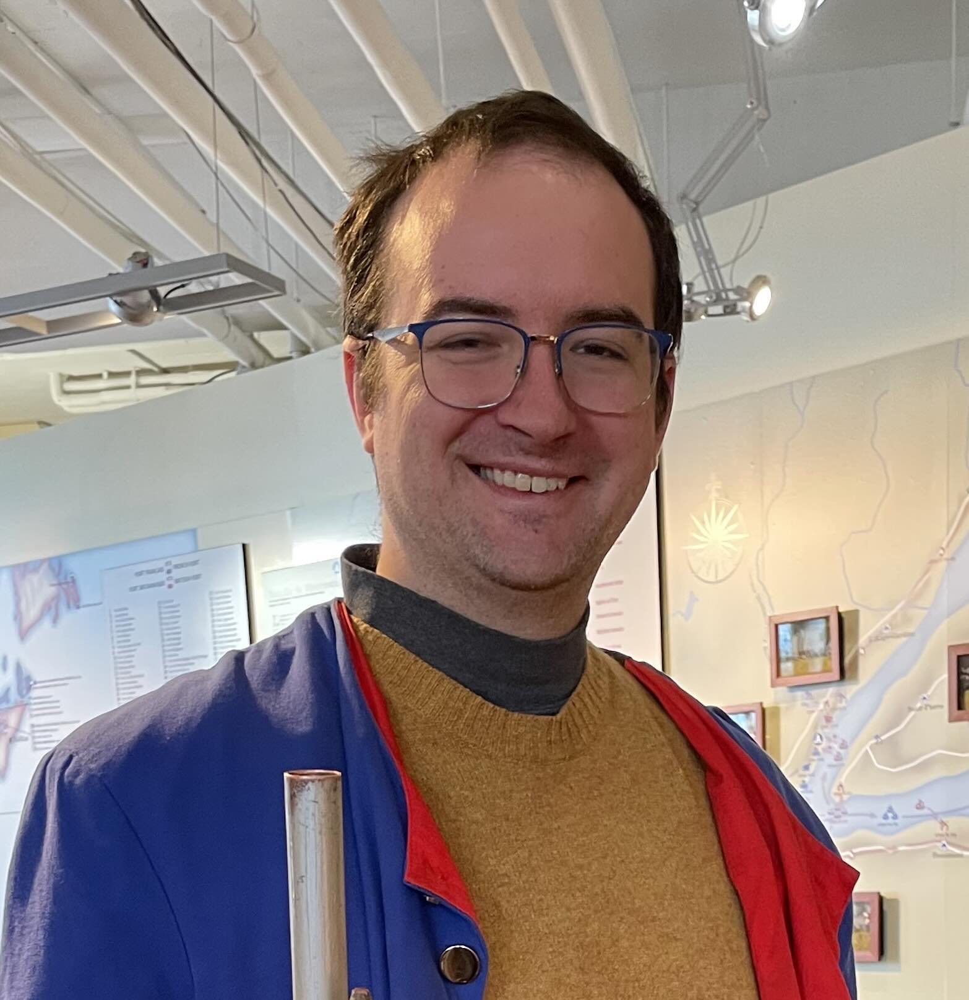
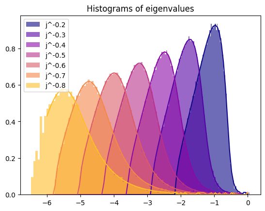

HELLO!
I am an associate professor at Mathematics and Statistics department at McGill University.
EMAIL: elliot.paquette@mcgill.ca
OFFICE: Burnside Hall 925
I received my Ph.D. from the Mathematics department at the University of Washington (2013) from Ioana Dumitriu Prof. Ioana Dumitriu. After that I held an NSF postdoctoral fellowship at the Weizmann Institute of Science, in Rehovot, Israel with Prof. Ofer Zeitouni. From 2016-2020, I was an assistant professor, tenure track, at Ohio State University. I joined McGill University in 2020.
My research is in probability. Most of my research is in random matrix theory. My first focus is on $\beta$--ensembles, connections to branching processes. My second focus is on high-dimensional optimization, especially in its connections to random matrix theory. I also have work on probability with geometric and topological inspirations.
If you'd like to know more about probability in Montreal. See some of the links below:
I am currently supervisor for the postdoctoral fellows:
- (2025-)Deborah Sampaio (McGill)
I have the pleasure of being the supervisor to the following PhD students:
- (2023-)Kevin Xiao (McGill)
- (2023-)Noah Marshall (McGill)
- (2025-)Maria Esipova (McGill) (joint with Louigi Addario-Berry)
And MSc students:
- (2024-)Yixi Aurora Wang (McGill) (joint with Courtney P.)
- (2025-)Brayden Smith (McGill)
In the past, I supervised the following trainees:
Postdoctoral Fellows
- (2022-2025) Elizabeth Collins-Woodfin (McGill) Assistant Professor, University of Oregon.
- (2024) Inbar Seroussi (McGill) Assistant Professor, Tel Aviv University.
- (2019-2020) Érika Roldán (Ohio State) (joint with Matt Kahle) Fellow, Max Planck.
PhD Students
- (2021-2026) Vincent Painchaud (McGill) Postdoc, KTH Royal Institute of Technology, Stockholm.
- (2020-2023) Kiwon Lee (McGill) (joint with Courtney P.) Lecturer at the Computational and Data Systems Initiative, McGill.
- (2019-2023) Andrew Vander Werf (Ohio State) (joint with Matt Kahle) Postdoc Brown
MSc Students
- (2023-2024) Sam Kirkiles (McGill)Software Engineer, Coinbase
- (2022-2024) Hugo Latourelle-Vigeant (McGill) (joint with Courtney P.) PhD Yale.
- (2022-2023) Andrew Cheng (McGill) (joint with Courtney P.) PhD Harvard.
- (2021-2022) Romain Pagès (KTH) Research assistant at McGill.
RESEARCH
My work falls into two research programs. Each is described below, with its papers listed on the publications page; earlier and miscellaneous work in probability makes up a third section there. You can also find most of this information through these other means:
CV * Google Scholar * arXiv
Random matrix theory
β-ensembles, characteristic polynomials, and log-correlated fields
The characteristic polynomial of a random matrix is, after taking logarithms, a field that is almost — but not quite — Gaussian and log-correlated.
Machine learning theory
scaling laws, high-dimensional optimization, and the dynamics of training
Training a large model is a high-dimensional stochastic process, and in the limit where the number of parameters and the amount of data both grow it acquires a deterministic description.
Earlier and miscellaneous work in probability — random graphs, geometry and topology — is collected in a third section of 22 papers.

Notes and Resources
Math 598/784 (Fall 2026): High-dimensional probability
Course notes, exercises, and schedule: High-Dimensional Probability.
Princeton Summer School 2026: Power Laws in Data and Optimization
Four modules on power-law covariance, scaling laws, momentum, and spectral optimization: Course notes, slides, and resources.
Math 598/784 (Fall 2023): High-dimensional probability
Course at a glance: Syllabus.
Math 598/784 (Winter 2022): Random matrix theory
Course at a glance: Syllabus.
Course materials
Random matrix theory of high-dimensional optimization. This is a set of notes for the July 2024 random matrix theory and probability summer schools: Random matrix theory and optimization theory.
Stochastic processes notes. This is a set of notes for Math547, stochastic processes, covering Markov chains and martingales (all in discrete time). Math 547 notes.
High dimensional limits of SGD. This is a set of notes for the July 2023 summer school in probability at Lehigh university, organized by Si Tang: High-dimensional limits of SGD.